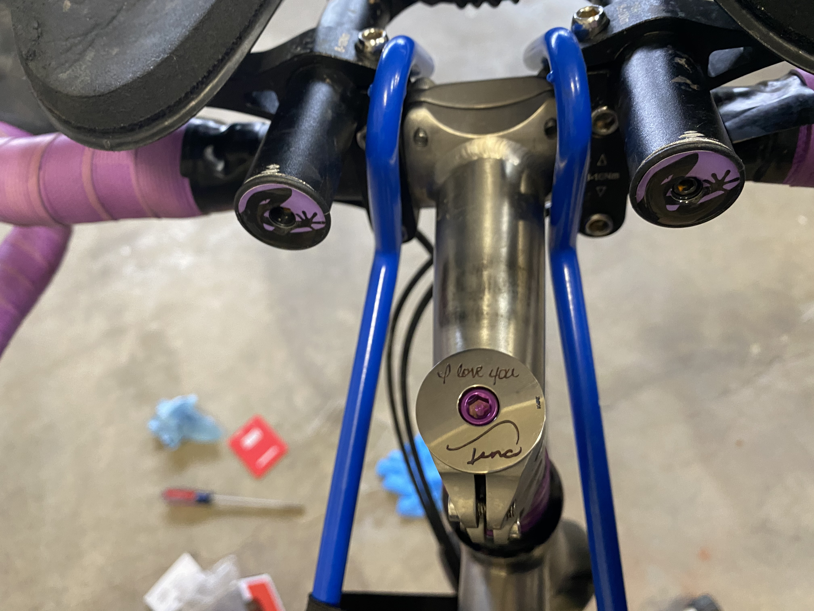
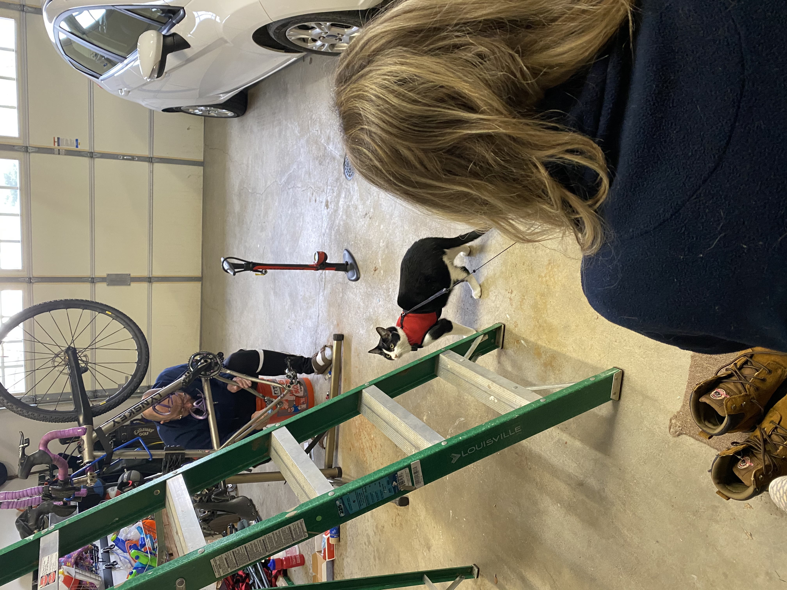
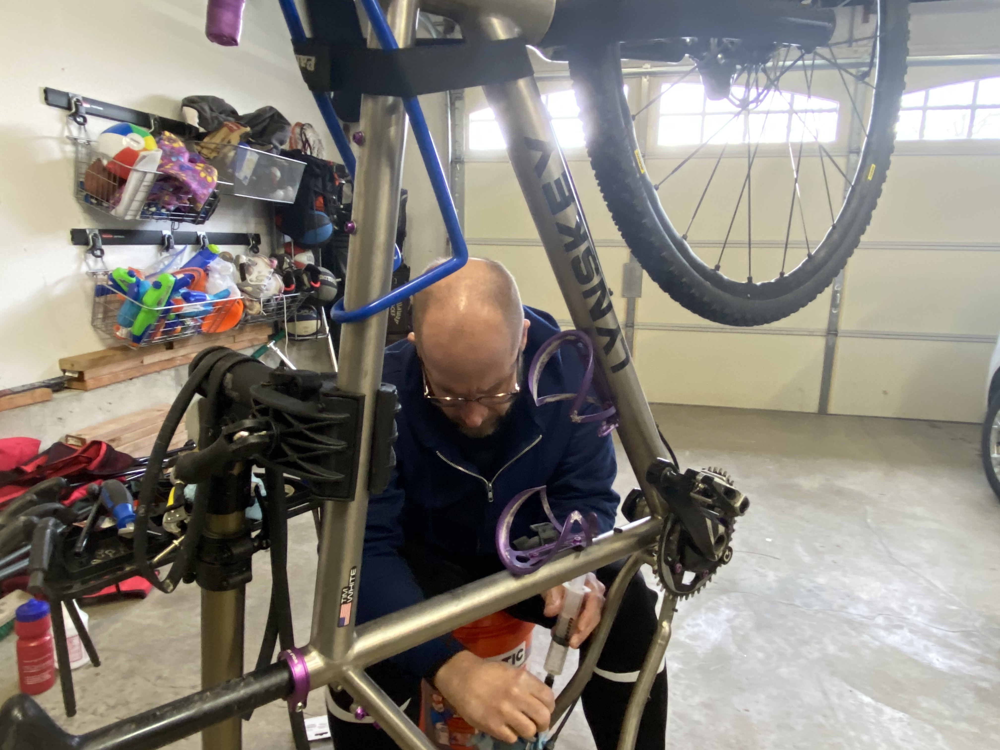
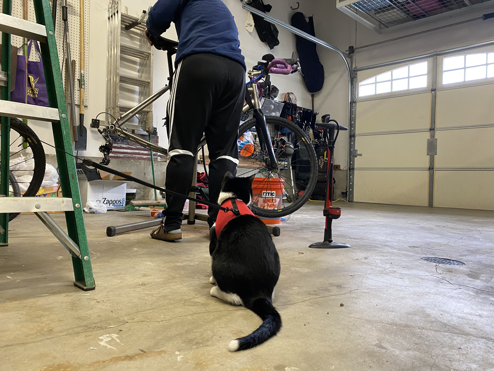
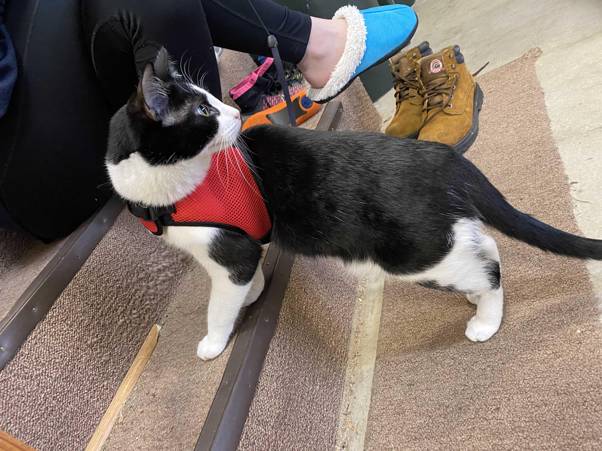
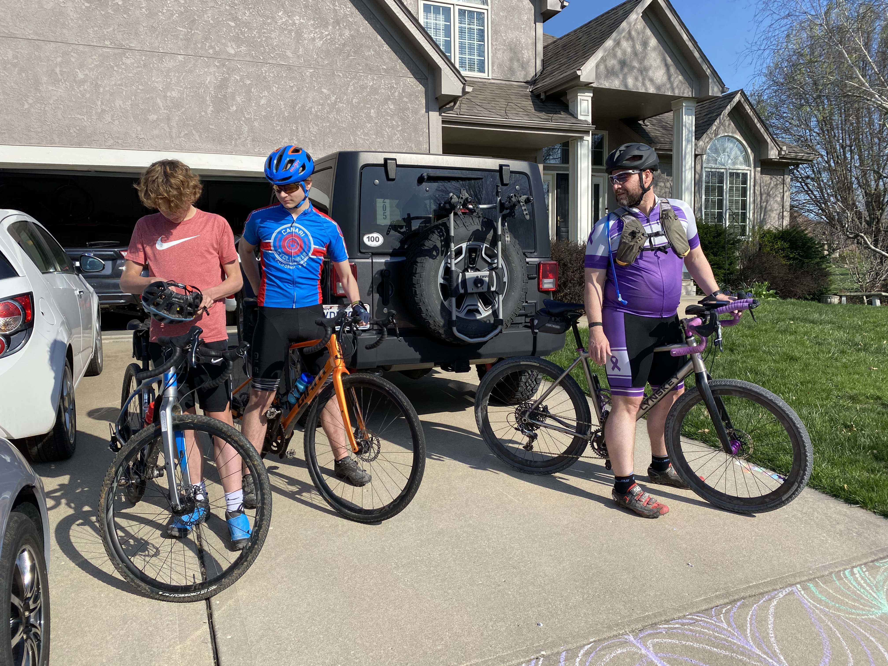

Tim White has been repairing and modifying bikes as a hobby as his four children venture out into the world leaving him home with the family cat. He has taken to honoring his late wife, Tina, through his hobby as well as how it allows him to spend time with his children.

The handlebars of Tim White’s racing bike are engraved with the phrase “I love you” and the name “Tina.” The engravings are in White’s late wife Tina’s handwriting. .

Emily White and the family cat Wilbur watch as Tim White completes a tune-up on his racing bike. White plans for an early evening ride with his sons.
.

Tim White applies lubricant to the chain of his racing bike before attaching it to the bike. White has been making modifications to the bike in honor of his late wife Tina. .

Family cat Wilbur sits patiently and watches as Tim White adjusts the seat on his racing bike. Wilbur is an aspiring outdoor cat but prefers to only venture into the garage with his harness at the moment.
.

White family cat Wilbur looks behind him as he climbs the steps to sit next to Emily White. Both are observing as father Tim White discusses modifications made to his racing bike.
.

From right: Tyler White, Ethan White, and Tim White get set up outside their home in preparation for an early evening bike ride. The group plans to bike for 12 miles. .